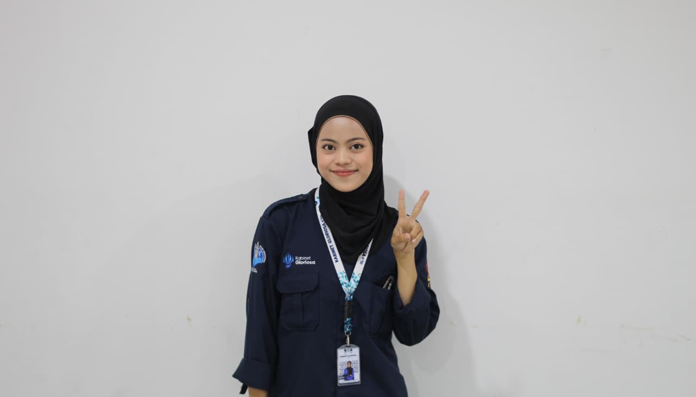
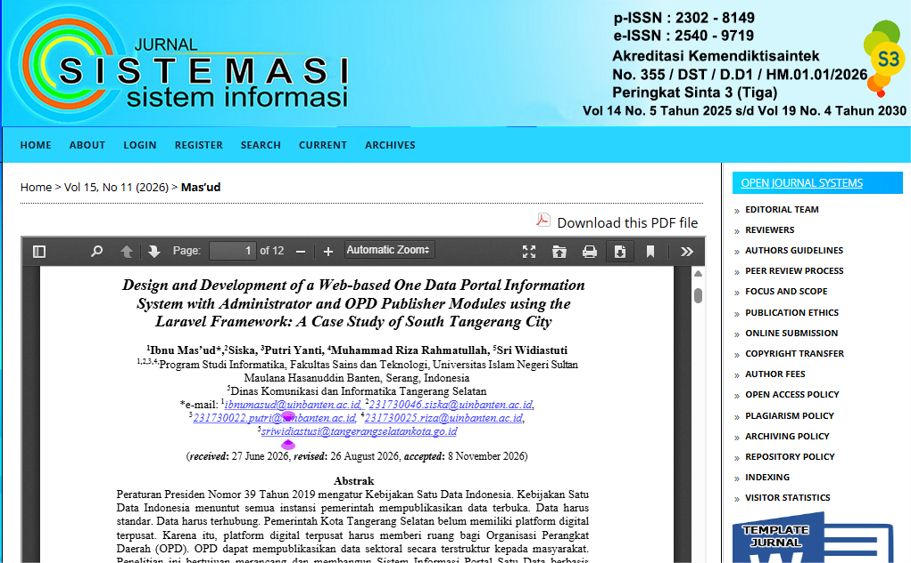
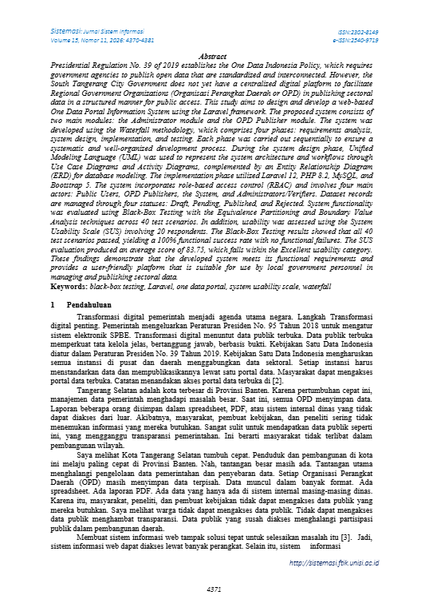
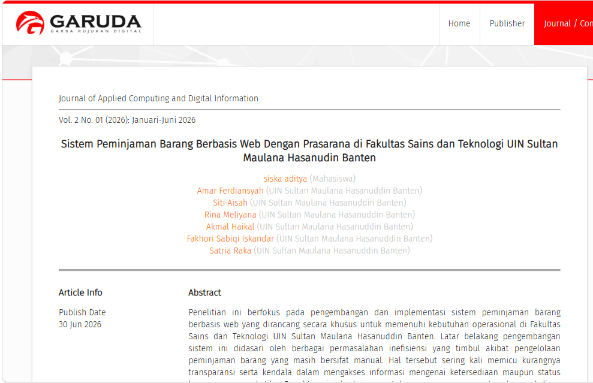

Desain Aplikasi Siska Resto
APLIKASI PEMESANAN RESTORAN
Lihat Detail →MAHASISWA INFORMATIKA
Halo, saya Siska, mahasiswa Informatika yang memiliki ketertarikan pada teknologi Artificial Intelligence (AI), pengolahan data.
Lihat Project →
TENTANG SAYA
Informatics Student & Artificial Intelligence (AI)
Saya Siska, mahasiswi Informatika di UIN Sultan Maulana Hasanuddin Banten dengan peminatan Artificial Intelligence (AI). Saya memiliki pengalaman magang di Bidang Statistik Diskominfo Kota Tangerang Selatan, di mana saya mengolah data menggunakan Microsoft Excel dan Google Spreadsheet. Saya mempelajari dasar-dasar Web Development (HTML, CSS, PHP, MySQL, dan Laravel) dan UI Design, serta aktif sebagai CapCut Template Creator.
Saya juga sudah mempublikasikan dua artikel ilmiah di bidang sistem informasi: di jurnal Sistemasi tentang Portal Satu Data Kota Tangerang Selatan, dan di jurnal JACODI tentang sistem peminjaman barang berbasis web di Fakultas Sains dan Teknologi UIN SMH Banten.
Kenalan Lebih LanjutPENDIDIKAN
Artificial Intelligence
MY SKILL
Memahami dasar penggunaan Python untuk mengembangkan kecerdasan buatan, seperti ANN dan CNN, serta mengolah dan mengklasifikasikan gambar.
Saya membuat dan mengembangkan template video CapCut yang kreatif, menarik, dan dapat digunakan oleh pengguna lain.
Memiliki kemampuan dalam mengolah, memasukkan, dan menyusun data menggunakan Microsoft Excel dan Google Spreadsheet untuk membantu pekerjaan menjadi lebih rapi dan terorganisir.
Mampu merancang tampilan website dan aplikasi dengan memperhatikan kerapian, kenyamanan, dan kemudahan penggunaan.
Memiliki kemampuan dasar dalam pengembangan website menggunakan HTML, CSS, PHP, dan MySQL. Memahami penggunaan Laravel serta memiliki pengalaman membuat website sederhana dengan tampilan dan fitur sesuai kebutuhan.
MY WORK
APLIKASI PEMESANAN RESTORAN
Lihat Detail →TOKO FURNITURE & PERABOT RUMAH
Lihat Detail →OPEN DATA KOTA TANGSEL
Lihat Detail →CREATIVE VIDEO EDITING
Lihat Detail →


ARTIKEL PORTAL SATU DATA · 2026
Lihat Detail →

SISTEM PEMINJAMAN BARANG · 2026
Lihat Detail →8 SERTIFIKAT · FEBRUARI 2026
Lihat Semua →4 SERTIFIKAT · 2025
Lihat Semua →2 SERTIFIKAT · 2026
Lihat Semua →INTERNSHIP
Mengolah dan menginput data dengan Excel dan Google Spreadsheet, serta ikut mengembangkan Portal Satu Data (Laravel & MySQL): hak akses, verifikasi dataset, peta interaktif, dan panel admin.
Membantu kegiatan persiapan akreditasi program studi: merapikan data pendukung dan berkoordinasi dengan dosen serta staf.
ORGANIZATION
Terlibat dalam kepengurusan himpunan di tingkat program studi, mulai dari menyusun program kerja sampai menjalankan kegiatan untuk mahasiswa.
Menjadi pengurus yang membantu mahasiswa lewat kegiatan advokasi, serta belajar berkomunikasi, mendengarkan masalah, dan mencari solusi bersama.
Menjadi bagian dari organisasi Ikatan Mahasiswa Baros dalam mempererat hubungan antar mahasiswa, membangun kebersamaan, serta berkontribusi melalui kegiatan organisasi dan kemahasiswaan.
Mengelola administrasi dan surat-menyurat organisasi, mencatat notulen rapat, serta membantu koordinasi kegiatan kader.